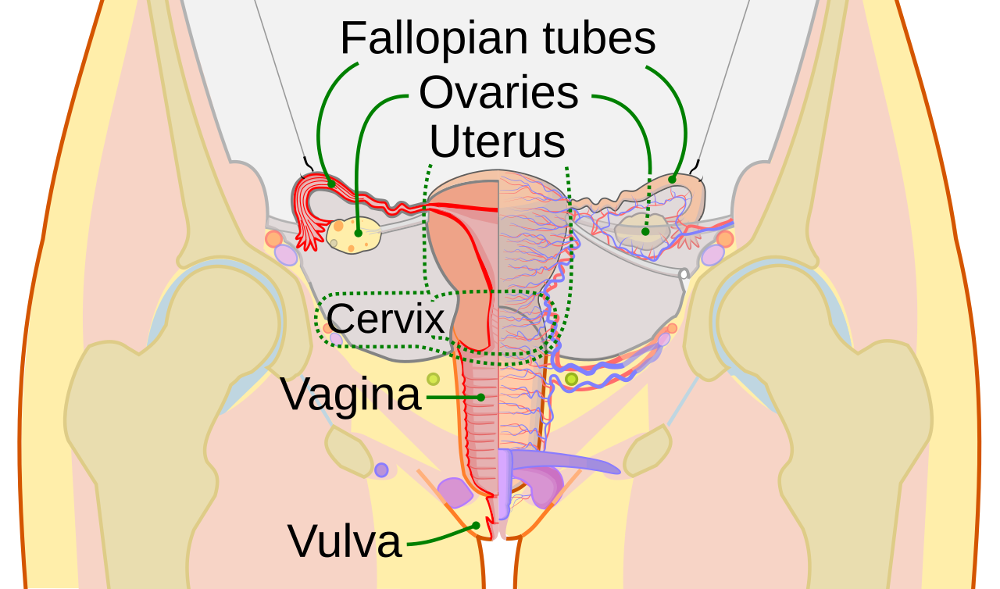

Vì Sao Dịch Nhầy Cổ Tử Cung Là "Cảm Biến Estrogen" Thời Gian Thực Của Cơ Thể?
Khi bạn theo dõi chu kỳ trên Oura Ring, Apple Watch, WHOOP hoặc Garmin, thiết bị đeo dựa chủ yếu vào nhiệt độ da ngoại vi ban đêm để xác định thời điểm rụng trứng. Dù theo dõi nhiệt độ cực kỳ chính xác trong việc xác nhận rụng trứng đã diễn ra, phương pháp này có một giới hạn sinh học tự nhiên: hormone Progesterone chỉ làm tăng nhiệt độ cơ thể sau khi trứng đã được phóng thích khỏi buồng trứng.
Nếu bạn muốn biết thời điểm rụng trứng đang đến gần trước từ 3 đến 5 ngày—dù để chuẩn bị mang thai, tránh thai tự nhiên theo phương pháp Sympto-Thermal (Triệu chứng – Nhiệt độ), hay đơn giản là hiểu vì sao năng lượng và ham muốn của mình đang dâng cao—cơ thể luôn cung cấp một chỉ dấu sinh học hoàn toàn miễn phí theo thời gian thực: Dịch nhầy cổ tử cung (Cervical Fluid / Cervical Mucus).
Hoàn toàn không phải là chất tiết ngẫu nhiên, dịch nhầy cổ tử cung là một hệ gel sinh học (Hydrogel) tinh vi được điều khiển trực tiếp bởi hormone, tiết ra từ hàng trăm tuyến hốc siêu nhỏ nằm bên trong kênh cổ tử cung (cánh cổng hẹp nối giữa âm đạo và buồng tử cung).

Cơ Chế Lý Sinh Của Cổ Tử Cung: Dịch Nhầy Loại G Và Dịch Nhầy Loại E
Nghiên cứu lý sinh đột phá của Giáo sư Erik Odeblad đã khám phá ra rằng các tuyến hốc cổ tử cung sản xuất hai loại gel mucin hoàn toàn trái ngược nhau tùy thuộc vào hormone nào đang chiếm ưu thế trong máu:
- Dịch nhầy loại G do Progesterone chi phối ("Người Gác Cổng"): Trong khoảng 22 đến 24 ngày của chu kỳ 28 ngày, khi Estrogen thấp hoặc Progesterone cao, các tuyến hốc phía dưới cổ tử cung tiết ra một mạng lưới sợi mucin đan chéo dày đặc giàu bạch cầu. Dưới kính hiển vi, lớp gel này trông như một hàng rào gai chằng chịt. Kết hợp với độ pH axit tự nhiên của âm đạo (
3.8 đến 4.5), nó tạo thành nút chặn vật lý ngăn cản tinh trùng và vi khuẩn xâm nhập vào tử cung. - Dịch nhầy loại E do Estrogen chi phối ("Cao Tốc Thụ Thai"): Khi một nang trứng trội lớn dần ở giữa và cuối pha Nang trứng, lượng Estradiol tăng vọt sẽ kích thích các tuyến hốc S và L của cổ tử cung. Tỷ lệ nước trong dịch nhầy tăng vọt từ 90% lên tới 98.5%, độ pH chuyển sang môi trường kiềm lý tưởng cho tinh trùng (
7.0 đến 8.5), và các phân tử mucin tự sắp xếp thành những làn bơi song song siêu nhỏ.
4 Trạng Thái Dịch Nhầy Cổ Tử Cung Qua Các Ngày Trong Chu Kỳ
Trên các ứng dụng theo dõi chu kỳ như Clue, Natural Cycles, Oura và Apple Health, dịch nhầy cổ tử cung được chia thành 4 giai đoạn quan sát trực quan dựa trên hình thái trên giấy vệ sinh, độ co giãn giữa hai ngón tay và cảm giác tại vùng kín khi đi lại:
| Giai Đoạn Dịch Nhầy | Ngày Điển Hình (Chu Kỳ 28 Ngày) | Hormone Điều Khiển | Đặc Điểm Nhận Diện Bằng Mắt & Xúc Giác | Khả Năng Thụ Thai & Tương Quan Thiết Bị Đeo |
|---|---|---|---|---|
| 1. Khô (Dry / None) | Ngày 5 – 7 (Ngay sau kỳ kinh) |
Estradiol và Progesterone đều ở mức nền thấp | Không thấy dịch trên giấy vệ sinh; vùng âm hộ có cảm giác khô ráo hoặc bình thường. | Khả năng thụ thai rất thấp. Nhiệt độ da trên đồng hồ/nhẫn đang ở mức nền thấp của pha Nang trứng. |
| 2. Dính / Đặc (Sticky / Tacky) | Ngày 7 – 9 | Đầu pha Nang trứng; Estradiol bắt đầu nhích nhẹ | Lượng ít, đặc, dạng bột hồ, vụn nhỏ hoặc hơi dẻo màu trắng đục/vàng nhạt; đứt ngay lập tức khi kéo nhẹ giữa hai ngón tay. | Khả năng thụ thai thấp. Mạng lưới mucin dày đặc vẫn khóa kín cổ tử cung; chuẩn bị bước vào giai đoạn chuyển tiếp. |
| 3. Kem Mịn (Creamy / Lotion) | Ngày 10 – 12 | Estradiol tăng dần ở giữa pha Nang trứng | Mịn màng, màu trắng sữa hoặc vàng kem—giống sữa dưỡng thể (lotion) hoặc sữa chua Hy Lạp. Vùng kín có cảm giác ẩm mát. | Giai đoạn chuyển tiếp / Bắt đầu có khả năng thụ thai. Hàm lượng nước tăng giúp tinh trùng sống được 1–3 ngày; chỉ số HRV đang tiến dần lên đỉnh tháng. |
| 4. Trong & Co Giãn Như Lòng Trắng Trứng (EWCM) | Ngày 12 – 14 (Đỉnh cửa sổ thụ thai) |
Đỉnh sóng Estradiol ngay trước khi rụng trứng | Trong suốt (hoặc hơi ánh trắng), ướt và cực kỳ đàn hồi (Spinnbarkeit)—có thể kéo giãn 2.5 đến 10+ cm giữa ngón cái và ngón trỏ mà không đứt. Vùng kín có cảm giác trơn ướt rõ rệt. | Đỉnh Điểm Thụ Thai. Các kênh hydrogel song song nuôi dưỡng và dẫn đường cho tinh trùng sống tới 5 ngày. Nhiệt độ trên thiết bị đeo sẽ tăng +0.3°C trong vòng 24–48 giờ sau khi dịch này khô đi! |
| 5. Khô Hoặc Đặc Sau Rụng Trứng | Ngày 15 – 28 (Pha Hoàng thể) |
Progesterone chiếm ưu thế từ Hoàng thể | Nhanh chóng khô ráo hoặc chuyển sang đặc đục trong vòng 24 giờ sau rụng trứng khi Progesterone đóng kín nút nhầy cổ tử cung. | Giai đoạn Hoàng thể không còn khả năng thụ thai (sau khi được xác nhận bởi 3 ngày nhiệt độ thiết bị đeo tăng cao liên tiếp). |
Bằng Chứng Lâm Sàng: Quan Sát Dịch Nhầy Chính Xác Hơn Đếm Lịch
Chỉ dấu dịch nhầy cổ tử cung mạnh mẽ đến mức nào? Trong một nghiên cứu đa trung tâm kinh điển đăng trên tạp chí Human Reproduction (Bigelow et al., 2004; Scarpa et al., 2006), các nhà khoa học đã theo dõi xác suất thụ thai hàng ngày qua hàng nghìn chu kỳ: - Bất kể quan hệ tình dục diễn ra vào ngày thứ mấy trên lịch, xác suất thụ thai tăng gấp gần 3 lần vào những ngày người phụ nữ quan sát thấy dịch nhầy trong và co giãn như lòng trắng trứng (EWCM) so với những ngày không có dịch nhầy ở cùng một khoảng cách ngày tính tới lúc rụng trứng. - Ngay cả ở thời điểm 2 đến 3 ngày trước khi trứng rụng, sự hiện diện của dịch nhầy loại E chất lượng cao chính là yếu tố quyết định lớn nhất giúp tinh trùng sống sót đủ lâu để đợi trứng phóng thích.
Vì Sao Chỉ Đếm Ngày Trên Lịch Thường Sai Lệch? Các ứng dụng tính lịch truyền thống mặc định mọi phụ nữ đều rụng trứng vào Ngày 14. Trên thực tế, nghiên cứu dữ liệu lớn (Bull et al., Nature Digital Medicine 2019 phân tích hơn 600.000 chu kỳ từ Natural Cycles) chứng minh chỉ có 13% chu kỳ kéo dài đúng 28 ngày, và pha Nang trứng thường xuyên co giãn từ 3 đến 7 ngày do căng thẳng, di chuyển hoặc thiếu ngủ. Việc kết hợp chỉ báo sớm (Dịch nhầy cổ tử cung) với chỉ báo xác nhận trễ (Nhiệt độ da trên thiết bị đeo)—phương pháp Sympto-Thermal—giúp định vị chính xác cả điểm mở đầu lẫn điểm kết thúc của cửa sổ thụ thai.
4 Yếu Tố Thực Tế Ảnh Hưởng Đến Dịch Nhầy Cổ Tử Cung
Khi ghi chép dữ liệu trên ứng dụng, hãy lưu ý 4 yếu tố sinh hoạt có thể làm thay đổi tạm thời hình thái dịch nhầy:
- Mức Độ Đủ Nước Của Cơ Thể: Vì dịch nhầy lòng trắng trứng (EWCM) chứa tới 98% là nước, tình trạng thiếu nước nhẹ có thể khiến dịch nhầy trông đặc hơn hoặc chỉ ở dạng kem. Uống đủ
2.0 đến 2.5 lítnước kèm điện giải ở nửa cuối pha Nang trứng giúp tuyến cổ tử cung tiết gel trong suốt rõ rệt hơn. - Thuốc Kháng Histamine & Thuốc Cảm Nghẹt Mũi: Các loại thuốc dị ứng hoặc thông mũi không kê đơn làm khô màng nhầy toàn thân—không chỉ ở xoang mũi mà cả ở cổ tử cung—làm giảm lượng dịch EWCM quan sát được dù Estrogen vẫn đang ở đỉnh.
- Phân Biệt Dịch Cổ Tử Cung Với Dịch Hưng Phần Tình Dục: - Dịch nhầy thụ thai (EWCM) có cấu trúc dạng gel, kéo thành sợi dài giữa hai ngón tay mà không đứt và không thấm ngay vào giấy vệ sinh. - Dịch tiết khi hưng phấn (từ tuyến Bartholin và thành âm đạo) mỏng, loãng như nước, phủ đều trên bề mặt da và thấm hoặc bay hơi rất nhanh trên giấy.
- Nhận Biết Dịch Sinh Lý Khỏe Mạnh Và Dấu Hiệu Viêm Nhiễm: Dịch cổ tử cung khỏe mạnh chuyển từ trong suốt sang trắng sữa hoặc vàng nhạt khi tiếp xúc không khí, không mùi hoặc có mùi hơi chua nhẹ tự nhiên (do lợi khuẩn Lactobacillus bảo vệ). Nếu dịch chuyển sang vón cục như bã đậu kèm ngứa rát (nấm Candida), màu xám đục có mùi tanh (viêm âm đạo do vi khuẩn), hoặc màu vàng xanh kèm đau vùng chậu, bạn nên thăm khám bác sĩ phụ khoa.
Quy Trình 3 Bước Quan Sát & Ghi Chép Dịch Nhầy Trong 15 Giây Mỗi Ngày
- Kiểm Tra Vào Giữa Ngày Hoặc Chiều (Trước Hoặc Sau Khi Đi Tiểu): Kiểm tra ngay khi mới ngủ dậy đôi khi chưa thấy rõ vì dịch cần thời gian di chuyển xuống ống âm đạo khi bạn đi lại.
- Áp Dụng Quy Tắc "Cảm Giác + Giấy Vệ Sinh": - Trước khi lau, hãy lắng nghe cảm giác tự nhiên ở vùng âm hộ (khô ráo, ẩm mịn hay trơn ướt rõ rệt). - Dùng giấy vệ sinh sạch lau từ trước ra sau, quan sát màu sắc và thử chạm hai mặt giấy (hoặc dùng ngón cái và ngón trỏ sạch) kéo nhẹ xem dịch thuộc nhóm dính đặc, kem mịn hay trong suốt kéo sợi.
- Luôn Ghi Nhận Trạng Thái Màu Mỡ Nhất Trong Ngày: Nếu buổi sáng bạn thấy dịch dạng kem nhưng lúc 4 giờ chiều lại thấy dịch trong kéo sợi như lòng trắng trứng, hãy chọn Egg-White (Lòng trắng trứng) trên ứng dụng cho ngày hôm đó. Sau đó, hãy theo dõi biểu đồ nhiệt độ ban đêm trên đồng hồ trong 48–72 giờ tiếp theo để thấy bước nhảy nhiệt độ của Progesterone xác nhận kỳ rụng trứng hoàn tất!
Tài Liệu Tham Khảo & Nguồn Y Khoa
- Bigelow, J. L., Dunson, D. B., Stanford, J. B., Ecochard, R., Gnoth, C., & Colombo, B. (2004). Mucus observations in the fertile window: a better predictor of conception than timing of intercourse. Human Reproduction, 19(4), 889–892. Báo Cáo Nghiên Cứu Gốc (NCBI PubMed: 14998971) ↗
- Scarpa, B., Dunson, D. B., & Colombo, B. (2006). Cervical mucus secretions on the day of intercourse: an accurate marker of highly fertile days. European Journal of Obstetrics & Gynecology and Reproductive Biology, 125(1), 72–78. Báo Cáo Nghiên Cứu Gốc (NCBI PubMed: 16154254) ↗
- Clue Reproductive Health Library. Wet, Sticky, Clear: What Your Cervical Fluid & Discharge Are Telling You. Tài Liệu Gốc Xác Thực ↗
- Oura Ring Pulse Blog. Understanding Cervical Mucus Changes Across Your Menstrual Cycle. Cổng Nghiên Cứu Oura Ring Science ↗